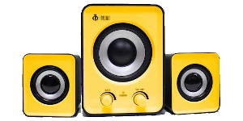

Stromix
Reviews
Meu ponto de vista de diversas coisas que compro
Home
Produtos
Headphone Bluetooth - Edifier W820
BT
Unidade do Condutor:
Drivers NdFeB de 40 mm
Versão do Bluetooth:
Bluetooth V4.1
Distância Efetiva:
10M
Microfone:
Sim (embutido na base do Headphone), o microfone não funciona no cabo, apenas via Bluetooth.

Caixa de som 2.1 - VoxCube VC-G200
Potência total:
11 Watts Rms
1 x Subwoofer de 5 Watts Rms e 3 polegadas
2 x Caixas Auxiliares de 3 Watts Rms e 2 polegadas
Frequência de resposta:
20 - 18000Hz
Conexão de Áudio:
P2